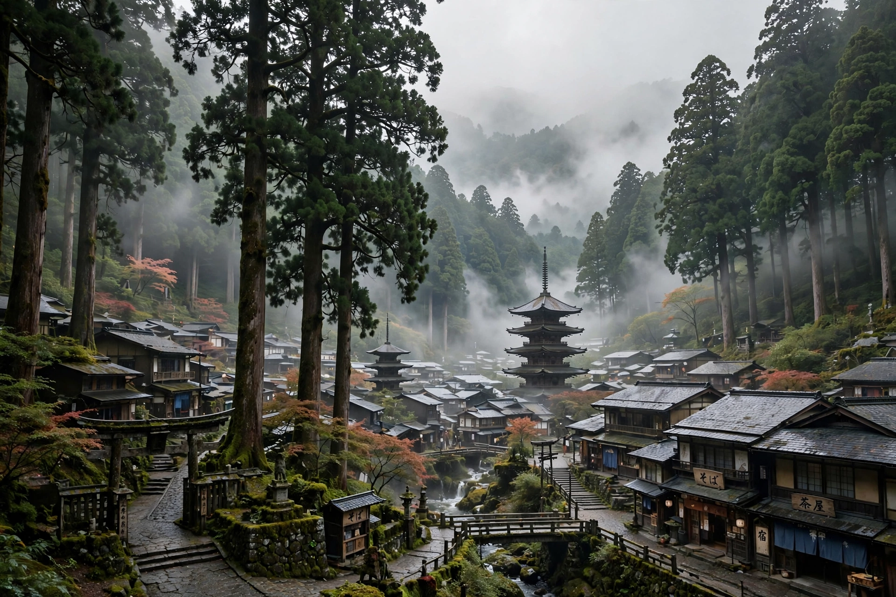

| Mount Kōya | |
|---|---|
 | |
| Japanese | 高野山 (Kōyasan) |
| Location | Kōya, Wakayama Prefecture, Japan |
| Elevation | About 800 m (basin); surrounding peaks to ~1,000 m |
| Founded | 816, by Kūkai (Kōbō Daishi) |
| Tradition | Shingon Buddhism |
| UNESCO | World Heritage Site (2004), part of "Sacred Sites and Pilgrimage Routes in the Kii Mountain Range" |
Mount Kōya (高野山, Kōyasan) is a large temple settlement in Wakayama Prefecture, Japan, and the center of Shingon Buddhism, an important sect introduced to Japan in 805 by Kūkai (posthumously Kōbō Daishi). The settlement, among cedar forests in a high valley surrounded by eight peaks said to resemble a lotus flower, is a major pilgrimage destination and houses over 100 temples, many offering lodging (shukubō) to visitors.
Kūkai received permission from Emperor Saga in 816 to establish a monastic retreat on the mountain. According to legend, Kūkai threw a sankoshu (a three-pronged vajra) from China toward Japan, praying it would land at a suitable site; it was later found in a pine tree on Mount Kōya, and the "Matsu" (pine) of that legend is still commemorated at the Danjo Garan sacred precinct. After Kūkai's death in 835, devotees came to believe he had not died but entered eternal meditation (nyūjō) in his mausoleum, awaiting the future Buddha Maitreya.
The two principal sacred areas are the Danjo Garan, with the great Konpon Daitō pagoda and the Kondō hall, and the Okunoin, the vast cemetery — the largest in Japan, with over 200,000 tombstones — leading to Kūkai's mausoleum. The head temple, Kongōbu-ji, contains celebrated painted sliding doors and Japan's largest rock garden. The mountain is reached from Osaka by the Nankai Electric Railway and a cable car, followed by a bus ride into the town.
Mount Kōya is one terminus of the Choishi-michi pilgrimage trail and a starting point connected with the Kumano Kodo network. Many temples offer overnight stays with vegetarian Buddhist cuisine (shōjin ryōri) and morning prayers. In 2004 the area was inscribed as a UNESCO World Heritage Site.
See also: Kūkai · Shingon Buddhism · Kumano Kodō